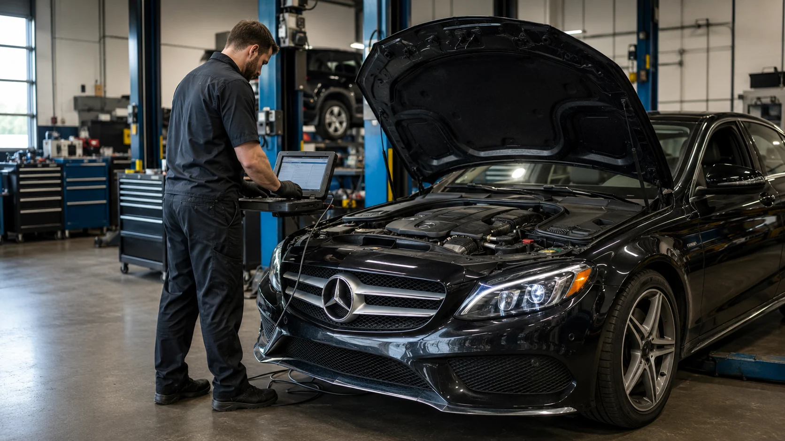
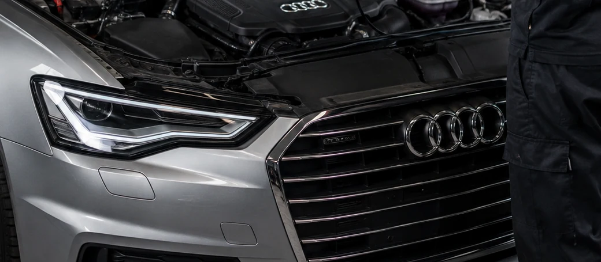
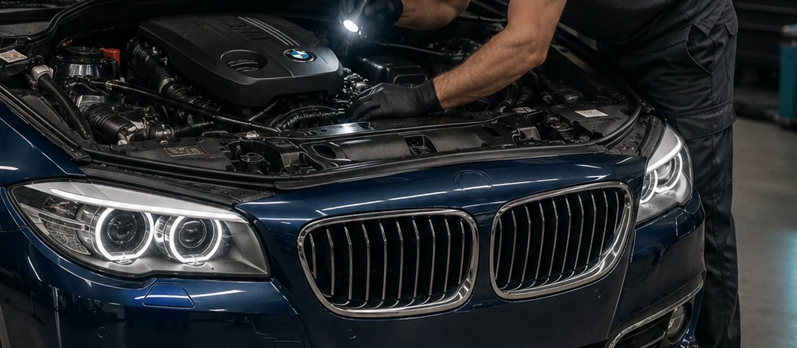
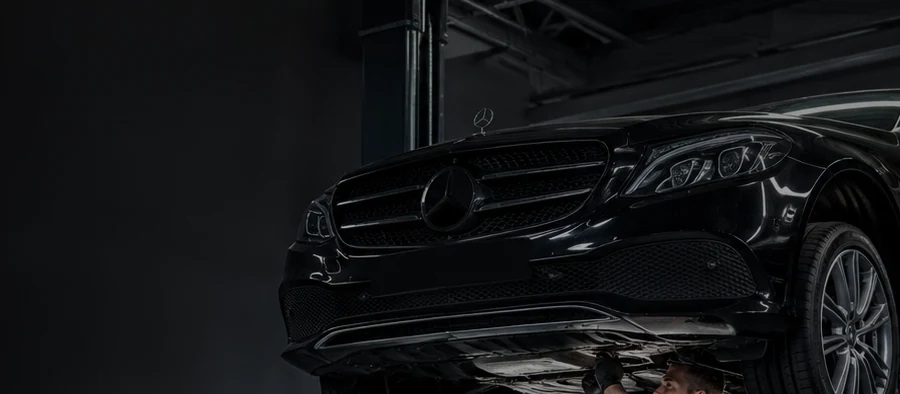
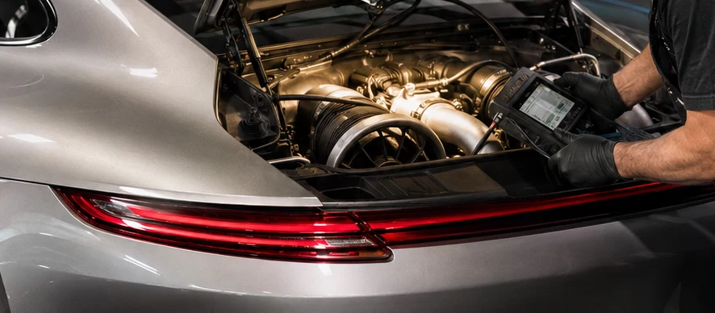
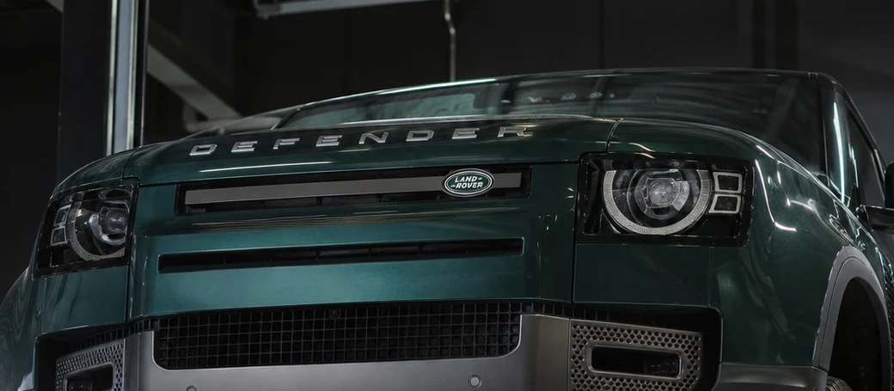
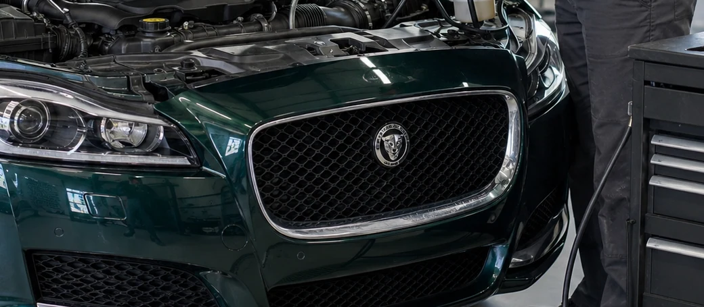
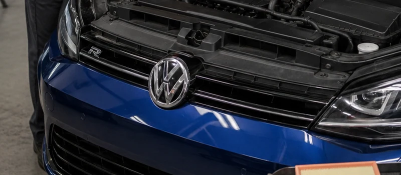

In today’s highly competitive marketplace, expertise is paramount. That’s why car maintenance experts are in high demand - they offer best-in-class services that can save owners time, money, and hassle. With the right qualifications and experience, these professionals can provide European automotive service, from routine maintenance to more complicated repairs.
At Acton Autowerks, we pride ourselves on our vast knowledge and understanding of the auto industry. Our team of experienced technicians have years of experience working with everything from luxury German vehicles to high-end sports cars. We understand that only the best will do when keeping your vehicle in pristine condition. Whether you need a simple tire rotation or a transmission replacement, we are here to help. With flexible appointment times and competitive prices, we are the go-to experts for all your automotive needs.
Our certified European auto repair offers a range of services to ensure your vehicle runs at its best. From routine maintenance such as oil changes, tire rotations, and brake checks to more complex repairs like transmission replacements or engine rebuilds, our automotive technicians have the experience and knowledge to provide you with the highest-quality service. We also offer competitive prices and flexible appointment times to make it easy to get the help you need. So if you’re looking for an expert team that can handle all your automotive needs, look no further than Acton Autowerks.
Looking for the best European auto specialists’ services? Let’s see which European cars we work on!
Our team of experts has years of knowledge working with various luxury vehicles, from German models like BMW and Audi to high-end sports cars. From routine maintenance and repairs to transmission replacements, we have the knowledge and expertise to keep your vehicle in top condition.


Audi Repair The Luxury European Car
Our Audi specialists will check all aspects of your car, from the engine to the transmission, brakes, and tires. We also offer regular supervision services such as oil changes, tire rotations, brake checks, and more to maintain your car operating smoothly for years to come.
At Acton Autowerks, our technicians use only factory specifications and genuine parts from trusted manufacturers such as Bosch, Continental, ZF, Siemens, and many more. We understand that using OEM parts is essential for preserving the integrity of your vehicle. Not only do these parts offer a better fit and performance, but they are also designed to provide longer-lasting quality. We only employ trained and ASE-certified professionals who understand the significance of providing superior service to keep your vehicle in top condition.
Some of the European auto repair services for Audi models we offer include:
Electrical Components
The electrical system is one of the essential aspects of your car. Our electrical specialists are fully trained and equipped to handle big jobs, from replacing a faulty alternator to diagnosing complex electrical issues. In electrical components, even a small mistake can lead to bigger issues and repairs. Our electrical specialists will identify potential problems with your Audi car’s electrical system, so you don’t have to worry about encountering expensive surprises down the line. Our Audi specialists will check the wiring, battery, starter motor, alternator, and more to ensure they are all functioning correctly.
Oil Leaks & Excessive Oil Consumption
Oil leaks are a common problem with most vehicles and can cause major damage to your engine. Suppose you suspect that your vehicle is experiencing an oil leak. In that case, our team will thoroughly inspect all the components in your Audi car’s engine. We also perform regular maintenance services, such as oil changes, for optimal performance and longevity. We inspect your Audi’s oil system to identify potential issues and fix them before they cause serious damage.
Engine Misfires
Engine misfires can cause shaking and poor performance in your Audi. Our technicians will thoroughly inspect the ignition system to identify potential problems and fix them before they worsen. If your Audi is experiencing any engine misfires, we can get it fixed fast and get you back on the road.
Failed Thermostat
The thermostat regulates your Audi’s engine temperature, so a failure can cause the engine to overheat. Our team of skilled technicians knows how to properly diagnose and repair the damaged components in your car’s engine. We also offer regular maintenance services such as coolant flushes and drive belt changes to ensure optimal performance and longevity.
Turbo Failure
If you’re experiencing problems with your Audi’s turbo, our technicians are fully qualified and experienced in fixing turbo issues. Whether it’s a small leak or complete engine failure, we will diagnose the problem and get your Audi back on the road in no time.
Decreased Power And Poor Fuel Economy
If your Audi is experiencing decreased power and poor fuel economy, our trusted specialists can quickly identify and fix the problem. We use only genuine parts from trusted manufacturers to ensure optimal performance with every repair. Our team can perform a complete diagnostic inspection of your Audi to evaluate potential problems and fix them quickly. Whether it’s an electrical system issue or an engine problem, we will get your vehicle running smoothly again.
Clogged Plenum Tray
If your Audi’s plenum tray is clogged, it can cause engine performance issues and decrease fuel efficiency. Technicians will thoroughly inspect your vehicle and identify potential clogs or blockages in the plenum tray. We then perform a complete cleaning to remove all debris and restore optimal function.
Air Suspension Component Issues
Air suspension is an important part of your Audi’s suspension system. If one of the components goes bad, it can cause a major disruption in your vehicle’s performance. Our team will inspect all the components in your Audi car’s air suspension system and make any necessary repairs to ensure optimal performance. We offer regular maintenance services such as airbag replacements for your Audi car’s suspension system to keep it running smoothly.

BMW Repair The Ultimate Driving Machine
Much like BMW, at AAW, we are committed to providing the ultimate driving experience for all our customers. Our team of talented technicians is fully trained and experienced in repairing and maintaining BMW vehicles. It’s not just about keeping up with regular oil changes or tire rotations; many other things need to be done to ensure your BMW runs like new. Regular maintenance services are essential for all vehicles, especially for high-performance cars like BMWs.
Our team of skilled technicians can provide a wide range of services for optimal performance and longevity, including engine repairs and air suspension maintenance.
Oil Leaks
The engine is one of the most important parts of any vehicle, and any problems with it can cause serious performance issues. Our team uses only genuine BMW parts to repair any oil leaks in your vehicle’s engine. We also offer regular maintenance services such as oil changes, brake inspections, and tire rotations to keep your BMW running smoothly for years to come.
Fuel Filter Replacement
If your BMW’s fuel filter needs to be replaced, our skilled technicians can quickly and efficiently do the job. We know how necessary it is for your vehicle to stay on the road, so we focus on providing reliable repairs and maintenance services to get your BMW back on track.
Coolant Leaks
If your BMW’s engine leaks coolant, it can cause serious problems. Our technicians will find the source of the leak and repair any issues to prevent further damage to your vehicle. We also offer maintenance services such as drive belt replacement, air filter changes, and battery inspections to keep your BMW in top condition.
Transfer Case Issues
The transfer case is a crucial part of your BMW’s powertrain system. If it goes bad, it can reduce the overall performance of your vehicle. We offer reliable repairs and maintenance services to fix any issues with the transfer case in your BMW.
Transmission Problems And Service
The transmission is an essential part of your BMW’s powertrain system. If it isn’t functioning properly, it can cause problems with overall performance and fuel efficiency on the road. Our technicians are fully trained and equipped to perform maintenance services like transmission flushes and inspections. To keep your BMW running like new, our team recommends regular maintenance services and timely repairs for any issues that may arise.
Engine Maintenance
To ensure optimal engine performance, it is important to have regular maintenance services performed on your BMW. Our skilled technicians offer a wide range of engine maintenance services to keep your car running like new. These services include oil changes, air filter replacements, fuel system cleaning, and drive belt replacement.
Suspension Maintenance
If your BMW needs suspension maintenance services, our team is here to help. We offer regular services like shock and strut replacement, ball joint inspection, tire rotations, and brake inspections to keep your vehicle running smoothly.
With years of auto services experience in the automotive industry, we are committed to providing reliable repairs and maintenance services for all BMW vehicles.

Mercedes-Benz Repair The Prestigious European Car
The Mercedes-Benz brand is an iconic symbol of luxury, prestige, and class. As one of the leading Mercedes service providers, we understand the importance of providing superior care for these vehicles. Our highly skilled and experienced technicians are trained to handle all maintenance services, repairs, and upgrades for any Mercedes-Benz vehicle.
We offer services, including maintenance, repair, and servicing of all models, from the A-Class to the SLS AMG.
Oil Change
An oil change is the most important service that your Mercedes-Benz vehicle needs. Our team uses only genuine Mercedes-Benz parts to ensure optimal performance. We complete all oil changes quickly and efficiently. It is significant to stay on top of routine maintenance services like oil changes to keep your Mercedes running smoothly.
Spark Plugs
If your Mercedes is having trouble starting or has reduced engine power, it may be due to faulty spark plugs. Our technicians are trained to diagnose and replace spark plugs in any model of Mercedes-Benz vehicle quickly and easily. We use only the highest-quality parts and equipment to ensure your vehicle runs at its best.
Brake Component Inspection
Brakes are one of the most important safety features in any vehicle. Our team offers regular brake inspections to ensure that all components are working properly and can handle any driving conditions on the road. We utilize state-of-the-art diagnostic tools to identify issues with your brakes and provide quick and reliable repairs. Components that wear out or fail can reduce braking power and lead to dangerous driving conditions.
Brake Fluid Level Check
In addition to regular brake component inspections, we regularly inspect the brake fluid level in your Mercedes-Benz vehicle. Acton Autowerks’ brake and alignment technicians offer comprehensive brake fluid checks. They can replace the fluid as needed to keep your brakes performing safely. If you notice any signs of a leak in your brakes, feel a soft brake pedal or see that the fluid level has dropped, it is important to have your vehicle inspected as soon as possible.
Coolant Level Check
Keeping an eye on the coolant level in your Mercedes-Benz is essential. Our technicians offer regular coolant checks and can replace the coolant as needed to maintain optimal engine performance. Being aware of any changes in the fluid level and taking action when necessary will help you prevent serious engine issues down the road. Air And Cabin Filter Replacement
Windshield Wiper Replacement
The windshield wipers in your Mercedes are critical in keeping you safe on the road. Our team offers regular repair and replacement services to ensure your wipers function properly. We have you covered if you need new wiper blades or a full system replacement.
Control Arm Bushings
The control arm bushings in your Mercedes-Benz are critical for optimal vehicle performance. Our team offers bushing replacement services to ensure your car can handle any driving conditions. We use only high-quality parts and equipment to keep your vehicle running smoothly, so you can enjoy a safe, comfortable ride every time you drive your Mercedes.
Tie Rods
The tie rods in your Mercedes-Benz play a key role in keeping you safe on the road. Our technicians offer regular tie rod replacement services to ensure your vehicle can handle any driving conditions. Whether you need new tie rods or have an issue with your steering alignment, we are here for all your maintenance needs.
Sway Bar Links
Like many parts of your Mercedes, the sway bar links are crucial in keeping you safe on the road. Our team offers regular replacement services to ensure your vehicle can handle any driving conditions and keep you comfortable. Whether you need a new sway bar links or have an issue with your suspension system, we are here for all your Mercedes-Benz maintenance needs.
Ball Joints
For optimal vehicle function, monitoring the ball joints on your Mercedes-Benz is essential. If you notice any issues, our team can provide ball joint replacement services to keep your car in good condition.
The air and cabin filters in your Mercedes-Benz help to keep the interior clean and free from dust, debris, and other impurities. Our technicians offer regular filter replacement services to ensure you can breathe easily while driving. Whether you need to replace the cabin filter or have your AC system serviced, we are here for all your Mercedes-Benz maintenance needs.

Porsche Repair Legendary Speed And Performance
Porsche maintenance is a specialist service that we offer to all makes and models of Porsche; old or new. Our team of experienced technicians provides the highest standards of care and concentration to detail when taking care of your Porsche. We understand that owning a Porsche means regular maintenance and service in order to maintain that legendary speed and performance that Porsche is known for.
Air Oil Separator Failure
Notice reduced performance or engine malfunctions in your Porsche? It could be due to an air oil separator failure. Our technicians can inspect and replace your air oil separator as necessary to help restore optimal performance and keep your Porsche running smoothly.
Transmission Problems
If there are any issues with the transmission in your Porsche, it is important to address them as soon as possible. Our technicians offer comprehensive transmission diagnostic and repair services for all Porsche vehicles and can address common problems such as slipping gears or delayed acceleration.
Air Suspension Problems
Our technicians offer comprehensive air suspension repair services that can help restore optimal performance and keep your car riding smoothly. We use high-quality equipment and parts to address problems with the air suspension system, including leaks or malfunctions.
Intermediate Shaft Bearing Failure (IMS Bearing)
At Acton Autowerks, we have a lot of experience with preemptive IMS (Intermediate Shaft) bearing replacements to permanently resolve the most critical vulnerability in your Porsche's M96 or M97 engine. If the factory-sealed bearing degrades and fails, it drops metal fragments directly into the oil supply, resulting in catastrophic, irreversible engine failure with zero warning. To prevent a massive engine rebuild, our A-Level Master Technicians execute this highly technical retrofit using premium factory tooling to ensure absolute technical accuracy.
Timing Chain Complications
If you notice reduced performance or engine malfunctions in your Porsche, it could be due to timing chain complications. Our team can inspect and replace the timing chains as necessary to help restore optimal performance and keep your Porsche running smoothly.
Cracked Cylinder Liners
Cracked cylinder liners and bore scoring are catastrophic vulnerabilities in water-cooled Porsche engines that will guarantee irreversible engine failure if left unaddressed. To permanently resolve this, our A-Level Master Technicians at Acton Autowerks perform precision engine-out rebuilds and sleeving with absolute technical accuracy.
Clutch Maintenance
The clutch in your Porsche plays a critical role in the overall functionality of your vehicle. This is why our team offers regular maintenance, repair, and replacement services for all types of clutches, including discussing which clutch would be ideal for your driving style and needs.

Land Rover Repair The Off-Road Master
Our technicians are experts in Land Rover maintenance and repair, offering the highest standards of care when working on this iconic vehicle. From Defenders to Range Rovers, we understand that owning a Land Rover means relying on its off-road capabilities and performance, which is why we provide legendary speed and performance for your vehicle.
Differential Issues
Differential failure in Land Rover platforms manifests through gear whine, binding during tight maneuvers, and catastrophic bearing seizure. Our A-Level Master Technicians perform precision teardowns, seal replacements, and full bearing retrofits using factory-level diagnostic software and specialty tooling to eliminate driveline lash and protect critical gear sets.
AC Compressor Replacement
A failing AC compressor introduces metal bits into your HVAC lines, destroying cooling performance and risking total system lockup. At AAW, we flush the entire AC system and install OEM AC compressors to guarantee reliable cabin climate control.
Air Suspension Maintenance
Leaking air bladders and overworked compressors are the leading cause of air suspension collapse on modern Land Rovers. We execute system pressure tests, replace failing height sensors or air struts, and recalibrate system ride-height software to restore original ground clearance and road feedback.
Overheating
Thermal management is non-negotiable on aluminum Land Rover powerplants. From cracked plastic coolant pipes and leaking radiators to failing cooling fans, we systematically diagnose and resolve overheating sources, using vacuum-assisted refilling to safeguard your engine from warp damage.
Braking System Problems
Stopping a heavy, high-output SUV requires peak braking efficiency. We perform high-level mechanical repairs on modern Land Rover braking systems—replacing worn rotors, pads, and seized calipers while completing full hydraulic pressure flushes for firm, immediate pedal response.
Electrical Issues
Complex CAN bus networks, short circuits, and intermittent wiring faults require deep root-cause analysis rather than arbitrary parts swapping. Utilizing factory-level diagnostic computers, our specialists isolate electrical shorts, repair damaged harnesses, and clear phantom fault codes with zero-compromise precision.
Power Steering & Hydraulic Pump Issues
A compromised power steering pump ruins steering feel and can contaminate the entire hydraulic circuit with internal metal debris. We perform complete pump extractions and high-pressure fluid flushes to restore heavy-duty steering assist and prevent rack damage, maintaining strict first-time fix standards.

Jaguar Repair Elegant, Exquisite Design
Maintaining a Jaguar can be an expensive endeavor much like other luxury vehicles. The cost of regular services, repairs, and maintenance can vary considerably depending on the model and age of your Jaguar.
At Acton Autowerks, we are your Jaguar dealer alternative, specializing in providing the highest quality and affordable Jaguar maintenance, repairs, and services. We are experts in all models of Jaguars, including XF, F-Type, and XJ. Whether you require a routine oil change or an engine tune-up, our team has you covered.
We also offer the following:
Coolant Loss And Overheating
The cooling system of your Jaguar is an essential component for preventing engine overheating and damage. Our team offers comprehensive cooling system maintenance, repairs, and services to help ensure optimal performance.
Tire Replacement And Alignment
Jaguars are known for their beautiful design on the outside and comfort features inside, but they need high-quality tires to provide a smooth ride. Acton Autowerks offers complete tire replacement and alignment services that can help protect your vehicle while driving in any condition.
Brake System Problems
Regular brake system maintenance is essential for you and your passengers’ safety. Our team offers complete brake system diagnostics, repairs, and replacements to help ensure optimal performance.
Oil Leaks
Oil leaks can cause significant engine damage if left unaddressed. We offer services for the most expensive jaguar oil leak diagnostics and repairs, including sealing, replacing, or refilling your oil.

Volkswagen Repair The Versatile European Performance Car
Volkswagen has a long history of providing drivers with versatile and reliable vehicles. VW’s have been praised for their versatility, reliability, European-style, and performance. At our service center, we offer comprehensive maintenance, diagnostic services, and repair assistance for all makes and models of Volkswagen vehicles.
AC Compressor Replacement
To replace your AC compressor, our team offers comprehensive services for all Volkswagen models. We aim to work with your budget to provide options that fit your price range and help keep you cool on the road.
Crankshaft Position Sensor Replacement
The crankshaft position sensor is an essential component that transmits data to the ECU for optimal engine performance. We offer sensor replacement, diagnostics, and repairs to help ensure smooth engine performance.
Shock And Strut Replacement
The shocks and struts of your Volkswagen help control the ride quality and handling of the vehicle. We offer comprehensive replacement services for all Volkswagen models if your shock or strut has worn out or you want to upgrade your existing components.
Fuel Pressure Regulator Replacement
The fuel pressure regulator helps maintain and control the proper fuel flow to your engine. To ensure your engine continues to run smoothly, our team can help you with any Volkswagen fuel pressure regulator replacement services.
Fuel Injector Replacement
Fuel injectors dictate your engine's combustion efficiency. When they degrade, it leads to power loss, misfires, and potential catalytic converter damage. To resolve this, our technicians utilize factory-level diagnostic computers and premium tooling to pinpoint the fault and restore your VW's factory performance.
Fuel Pump Replacement
A failing fuel pump starves your engine of fuel, resulting in lean-run conditions and unpredictable breakdowns. Because we prioritize absolute technical accuracy, we perform this critical replacement using exact-fit components to ensure flawless, uninterrupted fuel delivery.
Power Steering Pump Replacement
A compromised power steering pump destroys road feedback and can contaminate your entire hydraulic system with metal shavings. We perform comprehensive pump replacements and complete system flushes to restore factory steering precision.
Radiator Replacement
Efficient heat management is mandatory for water-cooled European platforms. A leaking radiator will inevitably lead to overheating and catastrophic engine failure if ignored. We carefully extract the damaged unit and system-bleed the new radiator to safeguard your VW’s thermal efficiency going forward.
Brake Flush
Brake fluid absorbs moisture over time, fundamentally degrading your stopping power and corroding expensive ABS modules from the inside out. Our team is well versed in executing complete, high-pressure brake flushes to extract degraded fluid and restore rock-solid pedal feel.
Coolant Flush
Degraded coolant turns acidic, silently eating away at water pumps, cylinder head gaskets, and vital engine internals. To combat this, we offer complete coolant extractions and vacuum-assisted refilling procedures.
CV Axle / Shaft Replacement
A vehicle’s constant movement and torque can damage the axles over time. For superior quality Volkswagen axle replacements, our team is here for you.